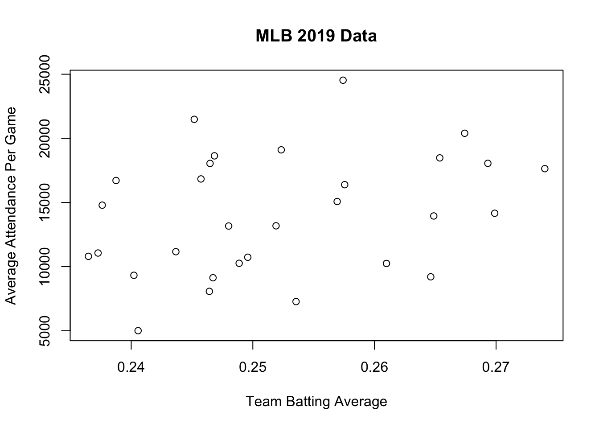

Here is some of my work in R Studio!
Portfolio
Introduction to Data Science
Introduction to Data Science
Problem Set 1
Question 1a
state <- c(1, 2, 3, 4, 5)
pop <- c(12.80, 19.45, 3.56, 0.97, 8.88)
cases <- c(139623, 439238, 52095, 17857, 196337)The first vector, state, is created using the concatenate function to combine the five states within the data set (state 1, 2, 3, 4, and 5). The second vector, pop, is created using the concatenate function to combine the populations for those five states (12.80, 19.45, 3.56, 0.97, 8.88). The third vector, cases, is created using the concatenate function to combine the numbers of cases for the five states within the data set (139623, 439238, 52095, 17857, 196337). Now, these three vectors store all of the data on COVID-19 for five northeastern states as provided within the data table.
Question 1b
ne.covid <- cbind(state, pop, cases)
ne.covid## state pop cases
## [1,] 1 12.80 139623
## [2,] 2 19.45 439238
## [3,] 3 3.56 52095
## [4,] 4 0.97 17857
## [5,] 5 8.88 196337The object ne.covid was created by combining the three columns (state, population, cases) from the data set into a matrix. The function cbind was implemented and assigned to ne.covid. Once created, running ne.covid displays the same data table but in R.
Question 1c
mean(ne.covid[,2])## [1] 9.132median(ne.covid[,2])## [1] 8.88max(ne.covid[,2])## [1] 19.45min(ne.covid[,2])## [1] 0.97The mean of the second column of ne.covid is 9.132, the median is 8.88, the maximum is 19.45, and the minimum is 0.97.
Question 1d
mean(ne.covid[,3])## [1] 169030median(ne.covid[,3])## [1] 139623max(ne.covid[,3])## [1] 439238min(ne.covid[,3])## [1] 17857The mean of the third column of ne.covid is 169030, the median is 139623, the maximum is 439238, and the minimum is 17857.
Question 1e
#creating a vector for state population in thousands
pop.in.1000s <- pop*1000
#creating a vector for covid-19 cases per 1000 residenrs
cases.per.1000 <- cases /pop.in.1000sThe vector cases.per.1000 is created by assigning the result of the cases divided by 1000 to the vector. This vector represents the number of COVID-19 cases in each state per 1000 residents.
Question 1f
state_chr <- c("PA", "NY", "CT", "DE", "NJ")
plot(y=cases.per.1000, x=pop, xlab = "Population in Millions", ylab = "Cases per 1000 Residents", main = "COVID-19 in the Northeast", type = "n")plot(y=cases.per.1000, x=pop, xlab = "Population in Millions", ylab = "Cases per 1000 Residents", main = "COVID-19 in the Northeast", text(x = pop, y = cases.per.1000, labels = state_chr)) The scatterplot “COVID-19 in the Northeast” was created by using the plot function. Within the plot, y is designated as cases.per.1000, x is designated as population in millisons, the x-axis is labeled population with the xlab function, and the y-axis is labeled Cases per 1000 Residents with the ylab function. The title is created with the main function, and is labeled COVID-19 in the Northeast. The states are assigned to their corresponding dot on the scatterplot with the text function.
The scatterplot “COVID-19 in the Northeast” was created by using the plot function. Within the plot, y is designated as cases.per.1000, x is designated as population in millisons, the x-axis is labeled population with the xlab function, and the y-axis is labeled Cases per 1000 Residents with the ylab function. The title is created with the main function, and is labeled COVID-19 in the Northeast. The states are assigned to their corresponding dot on the scatterplot with the text function.
Question 1g
#adding cases.per.1000 and state_chr as columns to the ne.covid matrix
ne.covid <- cbind(ne.covid, cases.per.1000, state_chr)
#subsetting to identify the state most affected by COVID 19
ne.covid[ne.covid[, "cases.per.1000"] == max(cases.per.1000), c("state_chr", "cases.per.1000")]## state_chr cases.per.1000
## "NY" "22.5829305912596"#subsetting to identify the state least affected by COVID 19
ne.covid[ne.covid[, "cases.per.1000"] == min(cases.per.1000), c("state_chr", "cases.per.1000")]## state_chr cases.per.1000
## "PA" "10.908046875"New York has been the most affected by COVID-19, with around 22.58 cases per 1000 residents. Pennsylvania has been the least affceted by COVID-19, with about 10.91 cases per 1000 residents.
Question 1h If I could get one more piece of information about COVID-19 to describe how affected each of these states are, it would be the death rates. The death rates would signify the level of impact COVID-19 had on the states, as some people within the cases category may be asymptomatic or have mild symptoms and are okay now.
Question 2a
load("/Users/briannafisher/Dropbox/Github/BriannaFisher/data/2019MLBTeamsData.Rdata")
bb$avgattpergame <- as.numeric(bb$home.attendance/bb$games.played)
median(bb$avgattpergame)## [1] 14055.35max(bb$avgattpergame)## [1] 24532.77min(bb$avgattpergame)## [1] 5008.037Because there are an even number of teams, no singular team had the median average attendance of 14055.35 but the two in the middle were the Washington Nationals (with a median average attendance of 13949.27) and the Minnesota Twins (with a median average attendance of 14161.43). The team with the maximum average attendance per game was the Los Angeles Dodgers, with a maximum of 24532.77. The team with the minimum average attendance per game was the Miami Marlins, with a minimum of 5008.037.
Question 2b
bb$teambattavg <- as.numeric(bb$hits/bb$at.bats)
median(bb$teambattavg)## [1] 0.2492307max(bb$teambattavg)## [1] 0.2740068min(bb$teambattavg)## [1] 0.2364828Because there are an even number of teams, no singular team had the median team batting average of 0.2492307 but the two in the middle were the Oakland Athletics (with a median team batting average of 0.2488761) and the Cleveland Indians (with a median team batting average of 0.2495853). The team with the maximum batting average is the Houston Astros with a maximum of 0.2740068. The team with the minimum batting average is the Toronto Blue Jays with a minimum of 0.2364828.
Question 2c
plot(y=bb$avgattpergame, x=bb$teambattavg, xlab = "Team Batting Average",
ylab = "Average Attendance Per Game", main = "MLB 2019 Data") The graph looks very spread out, with the dots in seemingly randomly places. It is fairly nonlinear with no clear direction or association. The graph tells you that there is no relationship between team skill and attendance.
Question 2d
bb$runs.pitch <- as.numeric(bb$opponent.runs/bb$outs.pitched)
plot(y=bb$avgattpergame, x=bb$runs.pitch, xlab = "Opponent Runs per Outs Pitched",
ylab = "Average Attendance Per Game", main = "MLB 2019 Data 2") The graph looks like the lower the opponent runs per outs pitched, the higher the average attendance per game. The same is for the opposite, the lower the average attendance per game, the higher the opponent runs per outs pitched. There are some outliers, though, that do not fit the pattern. This tells you that while there is not a linear relationship between team skill and attendance, there is an association between the two.
The graph looks like the lower the opponent runs per outs pitched, the higher the average attendance per game. The same is for the opposite, the lower the average attendance per game, the higher the opponent runs per outs pitched. There are some outliers, though, that do not fit the pattern. This tells you that while there is not a linear relationship between team skill and attendance, there is an association between the two.
Question 2e
bb$teamwinper <- as.numeric(bb$wins/bb$games.played)
plot(y=bb$teamwinper, x=bb$teambattavg, xlab = "Team Batting Average",
ylab = "Team Winning Percentage", main = "MLB 2019 Data 3") The graph looks more linear than the other two, with team winning percentage increasing as team batting average increases. This tells you that there is a positive relationship between team batting average and team winning percentage.
The graph looks more linear than the other two, with team winning percentage increasing as team batting average increases. This tells you that there is a positive relationship between team batting average and team winning percentage.
Question 2 Bonus
prediction <- lm(formula = teamwinper ~ teambattavg, data = bb)
plot(bb$teamwinper ~ bb$teambattavg, xlab = "Team Batting Average",
ylab = "Team Winning Percentage", main = "MLB 2019 Data 3")
abline(prediction) To make a better prediction of a team’s winning percentage, the least squares regression line can be calculated and plotted in order to show where the predicted values would lie. This line is used to predict the value of y, or team winning percentage, for any value of x, or team batting average.
To make a better prediction of a team’s winning percentage, the least squares regression line can be calculated and plotted in order to show where the predicted values would lie. This line is used to predict the value of y, or team winning percentage, for any value of x, or team batting average.
Question 3a
recentgrads <- read.csv("/Users/briannafisher/Dropbox/Github/BriannaFisher/data/recentgrads.csv", header = TRUE, na="NA")
ncol(recentgrads)## [1] 15nrow(recentgrads)## [1] 173There are 15 columns and 173 rows in the “recentgrads” data set. The unit of analysis of the data is major, as the data focuses on the jobs college graduates received depending on their major.
Question 3b
table(recentgrads$Major_category)##
## Agriculture & Natural Resources Arts
## 10 8
## Biology & Life Science Business
## 14 13
## Communications & Journalism Computers & Mathematics
## 4 11
## Education Engineering
## 16 29
## Health Humanities & Liberal Arts
## 12 15
## Industrial Arts & Consumer Services Interdisciplinary
## 7 1
## Law & Public Policy Physical Sciences
## 5 10
## Psychology & Social Work Social Science
## 9 9There are 16 different major categories that the data are divided into. The engineering category has the most majors, with 29 different majors.
Question 3c
sum(recentgrads$Women, na.rm = T)## [1] 3895228percentwomen <- sum(recentgrads$Women, na.rm = T)/sum(recentgrads$Total, na.rm = T)
percentwomen * 100## [1] 57.52255There are 3,895,228 women included in the dataset. 57.52% of the people in the dataset are women.
Question 3d
recentgrads$womengrads <- as.numeric(recentgrads$Women/recentgrads$Total)
order(recentgrads$womengrads, na.last = T)## [1] 74 67 27 2 4 9 1 107 112 12 6 3 51 53 82 15 29 10
## [19] 11 66 21 26 76 20 46 39 32 18 43 54 25 44 72 23 85 113
## [37] 14 16 111 64 34 28 24 144 36 5 31 17 19 37 106 108 73 80
## [55] 159 33 136 65 142 63 70 38 48 58 13 7 148 42 115 59 86 77
## [73] 95 90 79 103 140 75 147 118 83 68 41 47 84 126 8 69 123 30
## [91] 98 55 122 133 81 93 161 60 91 62 134 124 143 78 102 168 61 57
## [109] 169 109 131 71 128 121 117 167 150 94 88 97 145 137 141 50 166 96
## [127] 158 138 92 163 49 125 100 160 127 120 162 116 130 154 87 40 153 45
## [145] 99 132 105 110 135 146 119 172 156 171 155 114 170 149 56 104 129 173
## [163] 89 35 152 157 101 151 139 52 164 165 22recentgrads[74,]## Major_code Major Total Men Women
## 74 3801 MILITARY TECHNOLOGIES 124 124 0
## Major_category Employed Full_time Part_time
## 74 Industrial Arts & Consumer Services 0 111 0
## Full_time_year_round Unemployed Unemployment_rate Median P25th P75th
## 74 111 0 0 40000 40000 40000
## womengrads
## 74 0order(recentgrads$womengrads, na.last = F)## [1] 22 74 67 27 2 4 9 1 107 112 12 6 3 51 53 82 15 29
## [19] 10 11 66 21 26 76 20 46 39 32 18 43 54 25 44 72 23 85
## [37] 113 14 16 111 64 34 28 24 144 36 5 31 17 19 37 106 108 73
## [55] 80 159 33 136 65 142 63 70 38 48 58 13 7 148 42 115 59 86
## [73] 77 95 90 79 103 140 75 147 118 83 68 41 47 84 126 8 69 123
## [91] 30 98 55 122 133 81 93 161 60 91 62 134 124 143 78 102 168 61
## [109] 57 169 109 131 71 128 121 117 167 150 94 88 97 145 137 141 50 166
## [127] 96 158 138 92 163 49 125 100 160 127 120 162 116 130 154 87 40 153
## [145] 45 99 132 105 110 135 146 119 172 156 171 155 114 170 149 56 104 129
## [163] 173 89 35 152 157 101 151 139 52 164 165recentgrads[165,]## Major_code Major Total Men Women Major_category
## 165 2307 EARLY CHILDHOOD EDUCATION 37589 1167 36422 Education
## Employed Full_time Part_time Full_time_year_round Unemployed
## 165 32551 27569 7001 20748 1360
## Unemployment_rate Median P25th P75th womengrads
## 165 0.04010498 28000 21000 35000 0.9689537The major that had the highest percentage of women graduates is education, with a percentage of 96.90%. The major that had the lowest percentage of women graduates is military technologies, with a percentage if 0%.
Question 4 Random sampling is such a vital component of survey research because it ensures that there is no bias within the sample. If people were chosen to take a survey, the surveyor could have picked specific people who they know will prove their hypothesis and therefore discredit the validity and accuracy of the survey. Random sampling also ensures that the results are representative of the entire population, which is why a sample of 1500 people is enough to learn about the whole US population. If the sample is completely random, then we can be confident that a sample of only 1500 people will include people who represent all different backgrounds and interests within the country.
Problem Set 2
Question 1a
load("/Users/briannafisher/Dropbox/Github/BriannaFisher/data/exitpoll2016.RData")
require(tidyverse)
exit.untouched <- exit
#The unit of observation is people, and the dataset had more than one row for every observation.
#Because there are two rows for each observation, using the spread function will condense each repeated row into one. Since the favorable candidate and favorable rating variables are the ones repeated, they are used to create the new columns
exit <- spread(exit,
key = favorable.cand,
value = favorable.rating)
head(exit)## id PRSPA16 PHIL3 partyid married sex.age.race educ.hs educ.somecoll
## 1 138951 2 3 2 1 male 30-44 White 1 0
## 2 138952 1 2 1 1 male 65+ White 0 0
## 3 138953 2 3 1 2 male 45-65 White 1 0
## 4 138954 1 1 1 1 female 65+ White 0 0
## 5 138955 1 1 2 2 female 18-29 White 0 1
## 6 138956 2 3 2 1 male 65+ White 1 0
## educ.bach educ.postgrad clinton trump
## 1 0 0 2 1
## 2 0 1 1 2
## 3 0 0 2 1
## 4 0 1 1 2
## 5 0 0 1 2
## 6 0 0 2 1#Using the recode function, the values of 1 and 2 can be replaced for favorable and unfavorable
attributes(exit.untouched$favorable.rating)## $label
## [1] "Is your opinion of [favorable.cand]:"
##
## $labels
## favorable unfavorable omit
## 1 2 9exit$clinton <- recode(exit$clinton, "1" = "Favorable", "2" = "Unfavorable")
exit$trump <- recode(exit$trump, "1" = "Favorable", "2" = "Unfavorable")Question 1b
#the gather function brings responses that are spread over multiple columns into one. The recode function
#changes the data from numeric values (0/1) that don't make sense
exit <- gather(exit,
key = "educ",
value = "val",
starts_with("educ."))
exit$educ <- recode(exit$educ, "educ.hs" = "hs", "educ.somecoll" = "some college",
"educ.bach" = "bachelors", "educ.postgrad" = "postgrad")
#Since all unknown values are coded as 99 (using attributes checks this), I can recode those values to NA
attributes(exit.untouched$educ.hs)## $label
## [1] "What was the last grade of school you completed? [high school or less]"
##
## $labels
## yes no unknown
## 1 0 99attributes(exit.untouched$educ.somecoll)## $label
## [1] "What was the last grade of school you completed? [some college/assoc. degree]"
##
## $labels
## yes no unknown
## 1 0 99attributes(exit.untouched$educ.bach)## $label
## [1] "What was the last grade of school you completed? [college graduate]"
##
## $labels
## yes no unknown
## 1 0 99attributes(exit.untouched$educ.postgrad)## $label
## [1] "What was the last grade of school you completed? [postgraduate study]"
##
## $labels
## yes no unknown
## 1 0 99exit[exit$educ == "99"] <- NA
exit$val <- NULL
#Could have also changed the names by reshaping the education data
exit$educ[exit$educ == "educ.hs"] <- "hs"
exit$educ[exit$educ == "educ.somecoll"] <- "some college"
exit$educ[exit$educ == "educ.bach"] <- "bachelors"
exit$educ[exit$educ == "educ.postgrad"] <- "postgrad"Question 1c
#The separate function splits the sex.age.race column into three separate columns
exit <- separate(exit,
col = "sex.age.race",
into = c("sex","age","race"), sep = " ")
#Converting the columns to factors and then replacing the missing/unknown values with NA cleans the data
exit$age = as.factor(exit$age)
summary(exit$age)## -999 18-29 30-44 45-65 65+
## 52 1948 2924 4600 2304exit$age[which(exit$age == "-999")] = NA
summary(exit$age)## -999 18-29 30-44 45-65 65+ NA's
## 0 1948 2924 4600 2304 52exit$sex = as.factor(exit$sex)
summary(exit$sex)## female male unknown
## 6484 5328 16exit$sex[which(exit$sex == "unknown")] = NA
summary(exit$sex)## female male unknown NA's
## 6484 5328 0 16#The race values are already coded as NA for missing, but could have done this
exit$race = as.factor(exit$race)
summary(exit$race)## Asian Black Hispanic/Latino NA Other
## 124 1268 768 92 180
## White
## 9396exit$race[which(exit$race == "NA")] = NA
summary(exit$race)## Asian Black Hispanic/Latino NA Other
## 124 1268 768 0 180
## White NA's
## 9396 92Question 1d
#the new varible third.party is created by recoding everything as NA and then recoding each value to the
#new value. Using NULL removes the variable from the data set
attributes(exit.untouched$PRSPA16)## $label
## [1] "In today's election for president, did you just vote for:"
##
## $format.stata
## [1] "%8.0g"
##
## $labels
## Did not vote Hillary Clinton Donald Trump Gary Johnson Jill Stein
## 0 1 2 3 4
## Other
## 9exit$third.party <- "NA"
exit$third.party[exit$PRSPA16 == 1] <- "0"
exit$third.party[exit$PRSPA16 == 2] <- "0"
exit$third.party[exit$PRSPA16 == 3] <- "1"
exit$third.party[exit$PRSPA16 == 4] <- "1"
exit$third.party[exit$PRSPA16 == 9] <- "1"
exit$PRSPA16 <- NULLQuestion 1e
#the as.numeric function converts the married variable into a dummy variable, coding 1 for married and
#0 for not married
attributes(exit.untouched$married) #tells us that 1 is yes and 2 is no## $label
## [1] "Are you currently married?"
##
## $format.stata
## [1] "%8.0g"
##
## $labels
## Yes No
## 1 2exit$married <- as.numeric(exit$married==1)Question 1f
#the factor function recodes the PHIL3 and partyid variables into meaningful labels
attributes(exit.untouched$PHIL3)## $label
## [1] "On most political matters, do you consider yourself:"
##
## $format.stata
## [1] "%8.0g"
##
## $labels
## Liberal Moderate Conservative
## 1 2 3exit$PHIL3 <- factor(exit$PHIL3, labels = c("Liberal", "Moderate", "Conservative"))
attributes(exit.untouched$partyid)## $label
## [1] "No matter how you voted today, do you usually think of yourself as a:"
##
## $format.stata
## [1] "%8.0g"
##
## $labels
## Democrat Republican Independent Something else
## 1 2 3 4exit$partyid <- factor(exit$partyid, labels = c("Democrat", "Republican", "Independent",
"Something Else"))Question 1g
#the rename function will change the name of a column to something more meaningful
exit <- rename(exit, ideology = PHIL3)Question 1h
#I split the age variable into the different groups and then also made the partyid ordinal so that they can be compared. From there I made them into a table, and then did the frequencies of the results. Lastly, I added together all of the values in the table to make sure that they are equal to 1.
exit$Age.group <- "NA"
exit$Age.group[exit$age == "18-29"] <- 1
exit$Age.group[exit$age == "30-44"] <- 2
exit$Age.group[exit$age == "45-65"] <- 3
exit$Age.group[exit$age == "65+"] <- 4
exit$ID <- "NA"
exit$ID[exit$partyid == "Republican"] <- 5
exit$ID[exit$partyid == "Democrat"] <- 6
exit$ID[exit$partyid == "Independent"] <- 7
exit$ID[exit$partyid == "Something Else"] <- 8
mytable <- table(exit$Age.group, exit$ID)
prop.table(mytable)##
## 5 6 7 8 NA
## 1 0.0568143389 0.0696652012 0.0229962800 0.0064254312 0.0087926953
## 2 0.0825160636 0.0980723706 0.0480216436 0.0121745012 0.0064254312
## 3 0.1531958066 0.1531958066 0.0520798106 0.0125126818 0.0179235712
## 4 0.0723706459 0.0798106189 0.0280689888 0.0030436253 0.0114981400
## NA 0.0006763612 0.0020290835 0.0013527224 0.0000000000 0.0003381806sum(prop.table(mytable))## [1] 1Comparing the frequencies of the age group and ID variables, there is a 6.97% chance of people in the age group of 18-29 being democratic and a 5.68% chance of people being 18-29 and republican. The values are lower for independents and ‘something else,’ with a 0.64% chance of someone 18-29 being independent and a 0.88% chance of someone being 18-29 and something else. This is fairly expected, as young people are more likely to be democratic than any other party. Another interesting observation is that there is the same 15.32% chance of someone being 45-65 years old and either a republican or democrat. The 45-65-year-old age group also has the highest chance of being independent (5.21%) and something else (1.25%) than any other group. This may be explained by the fact that middle aged and older people are more likely to watch the news and therefore align with a particular political party, or because this age group has particularly high voter turnout and therefore need to be registered to a party to participate.
Question 2a
library(rio)
UNICEF_untouched <- rio::import("/Users/briannafisher/Dropbox/Github/BriannaFisher/data/unicefdata.xlsx")
UNICEF <- UNICEF_untouched
#Problems with the data:
#1. Columns are named with numbers
#2. Column names are in the actual columns
#3. Have dashes and x's within the dataQuestion 2b
#The names function renames the columns with the names in the first row, and then the first two rows can be deleted. Using rownames will renumber the rows so that it does not start at 3.
names(UNICEF) <- lapply(UNICEF[1, ], as.character)
UNICEF = UNICEF[-1,]
UNICEF = UNICEF[-1,]
row.names(UNICEF) <- 1:nrow(UNICEF)Question 2c
#rowmeans tells us the mean value of each row in the data set. The rows that have "1" as their mean
#are blank and should be removed. The -c function lets you drop rows or
#columns from the data set
rowMeans(is.na(UNICEF))## 1 2 3 4 5 6 7
## 0.14285714 0.14285714 0.07142857 0.14285714 0.14285714 0.14285714 0.14285714
## 8 9 10 11 12 13 14
## 0.14285714 0.14285714 0.14285714 0.14285714 0.14285714 0.14285714 0.14285714
## 15 16 17 18 19 20 21
## 0.14285714 0.14285714 0.14285714 0.14285714 0.07142857 0.07142857 0.14285714
## 22 23 24 25 26 27 28
## 0.14285714 0.14285714 0.14285714 0.14285714 0.14285714 0.07142857 0.07142857
## 29 30 31 32 33 34 35
## 0.14285714 0.14285714 0.14285714 0.14285714 0.14285714 0.14285714 0.14285714
## 36 37 38 39 40 41 42
## 0.14285714 0.07142857 0.14285714 0.14285714 0.14285714 0.14285714 0.14285714
## 43 44 45 46 47 48 49
## 0.14285714 0.14285714 0.14285714 0.14285714 0.00000000 0.14285714 0.14285714
## 50 51 52 53 54 55 56
## 0.14285714 0.07142857 0.14285714 0.14285714 0.14285714 0.14285714 0.14285714
## 57 58 59 60 61 62 63
## 0.14285714 0.14285714 0.07142857 0.14285714 0.14285714 0.14285714 0.14285714
## 64 65 66 67 68 69 70
## 0.14285714 0.14285714 0.14285714 0.14285714 0.14285714 0.14285714 0.14285714
## 71 72 73 74 75 76 77
## 0.14285714 0.14285714 0.14285714 0.07142857 0.14285714 0.14285714 0.14285714
## 78 79 80 81 82 83 84
## 0.14285714 0.14285714 0.14285714 0.14285714 0.14285714 0.14285714 0.14285714
## 85 86 87 88 89 90 91
## 0.14285714 0.14285714 0.14285714 0.14285714 0.14285714 0.07142857 0.14285714
## 92 93 94 95 96 97 98
## 0.14285714 0.14285714 0.07142857 0.14285714 0.07142857 0.14285714 0.07142857
## 99 100 101 102 103 104 105
## 0.14285714 0.14285714 0.14285714 0.14285714 0.14285714 0.07142857 0.14285714
## 106 107 108 109 110 111 112
## 0.00000000 0.14285714 0.14285714 0.14285714 0.07142857 0.14285714 0.14285714
## 113 114 115 116 117 118 119
## 0.14285714 0.14285714 0.14285714 0.14285714 0.14285714 0.14285714 0.14285714
## 120 121 122 123 124 125 126
## 0.07142857 0.14285714 0.14285714 0.14285714 0.14285714 0.07142857 0.14285714
## 127 128 129 130 131 132 133
## 0.07142857 0.14285714 0.14285714 0.14285714 0.14285714 0.14285714 0.14285714
## 134 135 136 137 138 139 140
## 0.14285714 0.14285714 0.14285714 0.07142857 0.14285714 0.14285714 0.14285714
## 141 142 143 144 145 146 147
## 0.14285714 0.14285714 0.14285714 0.14285714 0.14285714 0.14285714 0.14285714
## 148 149 150 151 152 153 154
## 0.14285714 0.14285714 0.14285714 0.07142857 0.14285714 0.14285714 0.14285714
## 155 156 157 158 159 160 161
## 0.14285714 0.14285714 0.14285714 0.14285714 0.14285714 0.14285714 0.14285714
## 162 163 164 165 166 167 168
## 0.14285714 0.07142857 0.14285714 0.14285714 0.14285714 0.14285714 0.14285714
## 169 170 171 172 173 174 175
## 0.14285714 0.14285714 0.14285714 0.14285714 0.14285714 0.07142857 0.14285714
## 176 177 178 179 180 181 182
## 0.14285714 0.14285714 0.14285714 0.14285714 0.14285714 0.14285714 0.14285714
## 183 184 185 186 187 188 189
## 0.14285714 0.14285714 0.14285714 0.07142857 0.14285714 0.14285714 0.14285714
## 190 191 192 193 194 195 196
## 0.14285714 0.14285714 0.14285714 0.14285714 0.14285714 0.14285714 0.07142857
## 197 198 199 200 201 202 203
## 0.14285714 1.00000000 0.92857143 0.14285714 0.14285714 0.14285714 0.14285714
## 204 205 206 207 208 209 210
## 0.14285714 0.14285714 0.14285714 0.14285714 0.14285714 0.14285714 1.00000000
## 211 212 213 214 215 216 217
## 0.92857143 0.92857143 0.92857143 0.92857143 0.92857143 0.92857143 0.92857143
## 218
## 0.92857143which(rowMeans(is.na(UNICEF)) == 1)## 198 210
## 198 210UNICEF <- UNICEF[,-c(12,14)]
UNICEF <- UNICEF[-c(198),]
row.names(UNICEF) <- 1:nrow(UNICEF)
UNICEF <- UNICEF[-c(209),]
row.names(UNICEF) <- 1:nrow(UNICEF)
#Now, the dataset has 12 columns and 216 rows. (When I take out the summary indicators on 2. h.,
#the dataset has 12 columns and 215 rows).NICEF)) == 1)Question 2d
UNICEF <- rename(UNICEF, c("Countries" = "Countries and areas",
"U5MR.1990" = "Under-5 mortality rate (U5MR) (1990)",
"U5MR.2015" = "Under-5 mortality rate (U5MR) 2015",
"U5MR.Male" = "U5MR (male)", "U5MR.Female" = "U5MR (female)",
"Total.Pop" = "Total population (thousands)",
"Annual.Births" = "Annual no. of births (thousands)",
"GNI.Per.Capita" = "GNI per capita (US$)",
"Neonatal.Mortality.Rate" = "Neonatal mortality rate",
"Life.Expect.Birth" = "Life expectancy at birth (years)",
"Total.Adult.Lit.Rate" = "Total adult literacy rate (%)",
"Primary.School.Net.Enrollment.Ratio" = "Primary school net enrolment ratio (%)"))Question 2e
which(UNICEF$Countries == "Notes:")## [1] 209UNICEF <- UNICEF[-c(209:216),] Question 2f
#This recodes all values of - in the dataset to NA
UNICEF[UNICEF == "-"] <- NA
#This converts the columns to be numeric and replaces the letters with NAs
UNICEF[,2:12] <- as.numeric(as.character(unlist(UNICEF[,2:12])))Question 2g
#The round function will round the values to the largest whole number after multiplying the variable by 1000
UNICEF$Total.Pop <- round(UNICEF$Total.Pop*1000)
UNICEF$Annual.Births <- round(UNICEF$Annual.Births*1000)Question 2h
#Subsetting the data creates a new dataset with only the wanted obeservations.
summary.indicators <- subset(UNICEF[199:208,])
UNICEF <- UNICEF[-c(198:208),]
#Now, the UNICEF dataset has 197 rows and the summary indicators dataset has 10 rows.Question 2i
#to find the change in mortality rate from 1990 to 2015, the two can be subtracted (any countries with a positive value had an increase in mortality rate)
change.mortality <- (UNICEF$U5MR.2015) - (UNICEF$U5MR.1990)
print(change.mortality)## [1] -90 -27 -21 -6 -69 -18 -15 -36 -5 -6 -63 -12 -17 -106 -5
## [16] -12 -6 -23 -80 -101 -86 -13 -10 -45 -2 -12 -113 -90 -38 -88
## [31] -50 -3 -47 -76 -11 -43 -19 -51 -49 -16 -7 -60 -9 -7 -8
## [46] -12 -18 -89 -5 -54 4 -29 -35 -62 -42 -96 -104 -17 -146 -8
## [61] -5 -5 -42 -101 -36 -5 -65 -8 -11 -52 -144 -136 -21 -77 NA
## [76] -38 -13 -4 -78 -58 -42 -22 -5 -8 -6 -15 -3 -19 -39 -53
## [91] -40 -9 -44 -95 -12 -25 2 -185 -29 NA -12 -7 -111 -178 -10
## [106] -85 -139 -5 -14 -33 -9 -34 -21 -4 -86 -12 -52 -161 -60 -29
## [121] -22 -105 -4 -5 -45 -232 -104 9 -6 -27 -58 -20 -14 -32 -26
## [136] -63 -30 -12 -11 -13 -4 -17 -27 -16 -110 -17 -9 -7 -13 -8
## [151] -64 -29 -93 -21 -3 -144 -5 -11 -7 -12 -43 -19 -160 -7 -11
## [166] -23 -58 -27 -14 -4 -4 -24 -63 -25 -31 -123 -68 -5 -11 -43
## [181] -61 -40 -30 -132 -11 -10 -5 -116 -4 -13 -33 -8 -15 -29 -84
## [196] -127 -5Three countries had a mortality rate that increased over this 25-year period. The countries are Dominica, Lesotho, and Niue.
Question 2j
#the cor functions finds the correlation between the GNI per captia and neonatal mortality rate
cor(UNICEF$GNI.Per.Capita,
UNICEF$Neonatal.Mortality.Rate, "complete.obs")## [1] -0.560275#the plot function creates a scatterplot of the GNI per capita and neonatal mortality rate
plot(y=UNICEF$Neonatal.Mortality.Rate, x=UNICEF$GNI.Per.Capita,
xlab = "Gross National Income Per Capita in U.S. Dollars",
ylab = "Neonatal Mortality Rate",
main = "Gross National Income Per Capita in U.S. Dollars and Neonatal Mortality") When looking at the relationship between Gross National Income per capita and Neonatal Mortality Rate, the correlation can be calculated as -0.56. This indicates that there is a negative association between Gross National Income per capita and Neonatal Mortality Rate. This can also be seen in the plot of Gross National Income per capita and Neonatal Mortality Rate, with Neonatal Morality Rate decreasing as Gross National Income per capita increases.
When looking at the relationship between Gross National Income per capita and Neonatal Mortality Rate, the correlation can be calculated as -0.56. This indicates that there is a negative association between Gross National Income per capita and Neonatal Mortality Rate. This can also be seen in the plot of Gross National Income per capita and Neonatal Mortality Rate, with Neonatal Morality Rate decreasing as Gross National Income per capita increases.